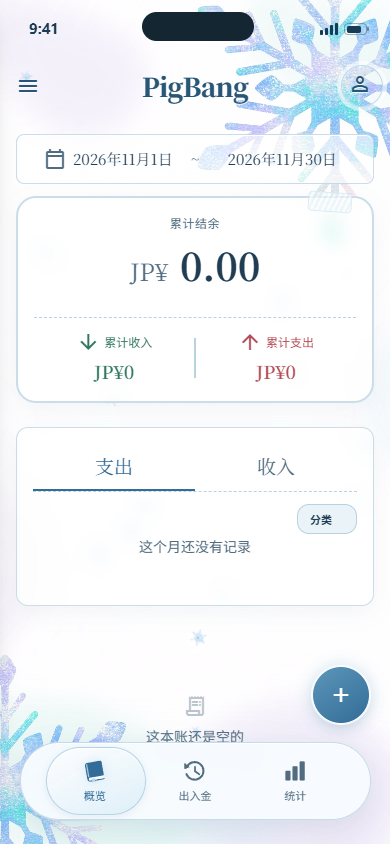
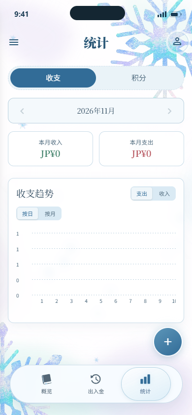

<!doctype html><html lang="zh-CN"><meta charset="utf-8"><meta name="viewport" content="width=device-width,initial-scale=1"><title>PigBang 珠光雪花 · 墨染背景预览</title><style>body{margin:0;padding:28px 18px 40px;background:#f8f8f8;color:#303030;font:15px/1.6 system-ui,sans-serif}main{max-width:840px;margin:auto}h1{margin:0 0 8px;font-size:23px}p{margin:0;color:#666}header{margin-bottom:22px}.pages{display:grid;grid-template-columns:repeat(2,minmax(0,1fr));gap:28px}figure{margin:0}figcaption{margin-bottom:12px;font-weight:500}a{display:block}img{width:100%;max-width:390px;height:auto;display:block;border-radius:24px;box-shadow:0 6px 24px #0000000b}footer{margin-top:22px;font-size:13px;color:#666}@media(max-width:740px){.pages{grid-template-columns:1fr;gap:28px}figure{max-width:390px;width:100%;margin:auto}body{padding:22px 12px}}</style><main><header><h1>珠光雪花 · 柔彩墨染</h1><p>淡紫、浅青、薄荷绿晕染；保留原雪花的柔彩与珠光颗粒。</p></header><section class="pages"><figure><figcaption>实际首页</figcaption><a href="pearl-ink-home.png" target="_blank"></a></figure><figure><figcaption>实际统计页</figcaption><a href="pearl-ink-stats.png" target="_blank"></a></figure></section><footer>现有布局、卡片、字体、图标与按钮保持原样。空账本预览；状态栏和安全区为展示模拟。</footer></main></html>